DEGR：以双重探索驱动生成式重排，实现跨请求上下文自适应桥接
这篇 KDD 2026 ADS Track 论文讨论工业推荐链路最末端的生成式重排。作者 Binglei Zhao、Xuanhua Yang、Xiwei Zhao、Sulong Xu 均来自京东。论文不是把重排继续限制在“当前请求内怎样排列十个商品”，而是把用户是否继续浏览、是否在下一次请求点击也纳入训练信号，让重排器在即时点击与后续探索之间随上游供给质量切换重心。论文入口为 arXiv:2608.04809，公开日期为 2026 年 8 月 5 日，DOI 为 10.1145/3770855.3818362。本轮在已核验来源中未找到独立代码仓库；附录仅给出 AR-ORPO 的 TensorFlow 风格伪代码，复现仍需要补足生产特征、标签延迟与采样实现。
重排只能重新排列上游给定的候选，低质量供给会使任何“当前请求内最优”很快触顶。论文要解决的矛盾是：系统既不能放弃眼前的点击和购买，又需要在供给较差时主动保留继续浏览的可能，让后续请求仍有机会出现意外转化。
1. 背景和问题
1.1 重排为何不只是再算一次 CTR
工业推荐通常由召回、预排、精排和重排级联组成。精排更接近逐 item 估计 CTR、CVR；重排面对的却是一个列表级决策：候选之间存在重复、互斥、先后依赖和业务目标冲突，前一个位置的曝光会改变用户理解后一个位置的语境。若上游给出 $N$ 个候选、最终曝光 $M$ 个，重排要在 $A_N^M$ 个有序序列中搜索。one-stage 路线如 PRM 先用自注意力修正 item 分数，再贪心排序，模型看到的上下文却仍来自原候选列表；当排序改变后，用户实际看到的是另一套曝光环境，训练上下文与服务上下文并不完全一致。two-stage Generator-Evaluator 路线能够先生成多个序列、再由 evaluator 评估真实排列上下文，但组合空间巨大，线上不可能穷举。generator-only 路线把 evaluator 或反馈信号蒸馏进生成器，服务更轻，却仍常把目标限定为当前请求的序列价值。
DEGR 进一步指出，重排处在用户真正可见的末端，却受上游供给硬约束。冷启动、兴趣延迟、数据漂移或上游超时都可能让这一轮的 30 个候选整体质量偏低；此时换任何排列都难以制造高即时点击。若系统仍把最高 pCTR 项全部前置，可能快速消耗用户兴趣并终止会话。另一种策略是把有探索价值但 pCTR 不高的 item 放在前面，牺牲一点局部确定性，换取滚动、继续曝光以及下一请求点击。这里的探索并非随机打散，而是试图识别“当前供给差、用户仍愿意浏览”的状态。跨请求目标还带来延迟归因难题：下一次点击发生得更晚，既可能由当前序列促成，也可能由新请求上游召回改善、用户主动搜索或时间变化造成；session 切分一旦过宽或过窄，探索标签就会把无关行为归给当前重排。
1.2 固定上游供给为何让单请求最优失效
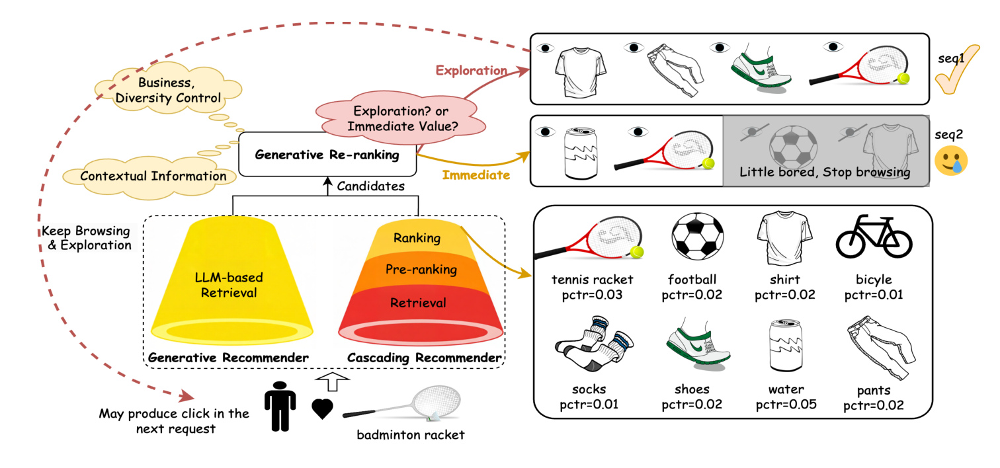
Figure 1 用同一组商品说明跨请求价值。Seq1 先展示衣服、裤子、鞋和球拍等较低 pCTR 项，单个位置未必是即时最优，却可能维持浏览，下一请求再发生点击；Seq2 把高 pCTR 的水和球拍提前，短时更有把握，但相似或过早满足也可能让用户厌倦。图中 tennis racket 在两条序列里相同，行为结果却受前序 item 和会话状态影响。这说明 DEGR 所谓“上下文桥”不是额外拼接上一请求特征，而是让当前排列对下一次请求是否发生、发生后是否转化负责。风险也在这里：若低 pCTR 项本身质量差，探索会退化为低效曝光，因此必须让探索强度随供给质量变化，而不是长期固定。
论文把一个 session 定义为连续多个请求，每个请求仍触发完整推荐链路。当前请求 $q$ 包含近期交互和用户画像，上游给出候选集合 $I=[i_1,\ldots,i_N]$，最终序列为 $\tau=[g_1,\ldots,g_M]$。DEGR 先学习同时包含即时与探索价值的奖励模型，再让生成器直接近似最优序列：
符号解释：$\Omega$ 是从 $N$ 个候选中取 $M$ 个并排序的空间，$q$ 是当前请求，$R_\theta$ 是学习得到的组合奖励。这个目标把搜索问题说清楚，却没有直接解决 counterfactual：日志只记录实际曝光序列的结果，看不到其他排列若被展示会怎样。论文依靠离线多机制采样和奖励模型近似这些未曝光序列，所以奖励校准、曝光偏差与策略外推会贯穿后续实验。
2. 方法
2.1 从单请求重排到双重探索框架
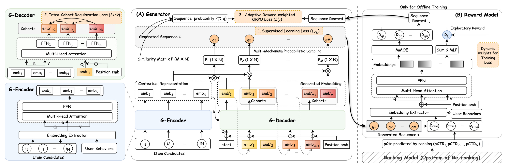
Figure 3 左侧是 generator，右侧是 exploratory reward model。离线训练先用真实曝光日志训练奖励模型，再冻结其参数；生成器的 encoder 编码 30 个候选和用户行为，decoder 逐步生成 10 个位置。训练不是单一路径：监督交叉熵让输出贴近线上曝光分布，EDC 约束并行解码头不要生成语义重复表示，AR-ORPO 则用冻结奖励模型给多条采样序列排序并做偏好优化。图中“dual exploration”有两层含义：奖励层面探索跨请求价值，策略层面通过多种采样和偏好列表探索排列空间。线上只部署 generator，reward model、group beam 和 heuristic sampling 都留在离线训练侧，避免复刻 GE 架构的生成后再评估延迟。
这张图也揭示了训练与推理的差别。训练时可以为同一请求构造许多轨迹、计算序列奖励并比较优劣；推理时只能对一条请求做一次 greedy generation。因而 DEGR 的工程命题其实是蒸馏：把昂贵探索得到的偏好方向写入单个生成器参数，使一次贪心解码尽量保留离线搜索收益。若 reward model 对新策略产生的序列失准，生成器会学习到偏差；若监督项过强，又会退回历史曝光分布。因此三个损失项的相对权重不是普通调参，而是在稳定性、列表内多样性与跨请求探索之间分工。
2.2 探索奖励模型：把后续行为变成可训练信号
奖励模型先用 DIN 抽取用户兴趣表示，把 item embedding 与正弦位置 embedding 相加，再对整个曝光序列做 self-attention。得到的上下文表示进入两组 head：MMoE 预测每个位置的点击或购买等即时奖励 $R_j$，MLP 聚合全序列表示并预测探索奖励 $R_e$。即时任务使用二元交叉熵：
符号解释：$y_j$ 是 item $j$ 是否点击或购买的真实标签，$R_j$ 是对应即时价值预测。该项提供细粒度业务目标，但仍只描述本次请求。
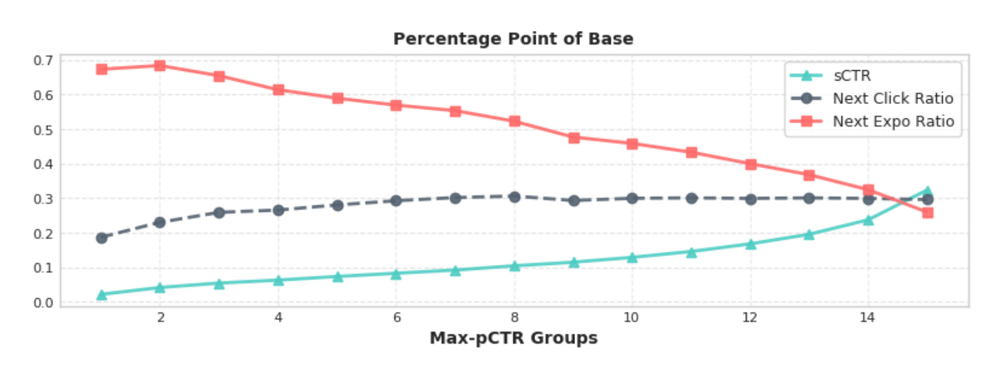
Figure 4 将京东日志按序列内最大上游 pCTR 等频分成 15 组。Max-pCTR 越高，sCTR 明显越高，说明它可近似上游供给质量；NER 随 Max-pCTR 上升而下降，表示供给较差时用户是否继续浏览更有区分力；NCR 与 Max-pCTR 的关系较弱，提示下一请求点击并不由当前最高 pCTR 单独决定。作者据此不直接把低 pCTR 当“探索价值”，而是用它调节 future-action 标签的训练权重。15 组采用等频而非等宽划分，能避免极端 pCTR 区间样本过少，却也隐藏了组间绝对阈值跨度；部署时应同时看各桶样本量与校准误差。图是相关统计，不是因果证明：高 Max-pCTR 可能同时关联用户活跃度、页面类型和流量入口，后续点击也可能来自新一轮上游候选改善。
探索监督随后拆为 A-E：A 是未点击且停止浏览，B 是未点击但继续滚动、下一请求仍未点击，C 是未点击但继续滚动并在下一请求点击，D 是当前点击后停止，E 是当前点击且继续滚动。A/B 为负、C/D/E 为正，但 B 在 Max-pCTR 不高于 0.01 时会被 mask：供给极差却仍继续浏览，不能简单惩罚为无价值。E 的权重大于 D，C 则是“当前未命中、后续命中”的桥接样本。实验章节会结合完整标签表检查这一数据口径。序列级任务使用如下加权 BCE：
符号解释：$y_e$ 是 A-E 映射后的探索标签，$R_e$ 是序列探索概率，$w_*$ 随类别而异。C 类还根据当前候选最大 pCTR 动态放大：
符号解释：$w'_C$ 是 C 类基础权重，$\max_j pCTR_j$ 越低，括号项越接近 4；最大 pCTR 越高，权重回落至 1。最终奖励把序列探索与位置折扣后的即时收益相加：
符号解释：$\alpha$ 控制探索奖励占比，实验设为 0.2；$\delta_j$ 随位置递减，使前排即时收益更重要。这里并不是在低供给时动态改变 $\alpha$，自适应性主要来自 $R_e$ 的训练权重与输入上下文；这是理解论文时应区分的机制边界。
2.3 生成器：监督锚点、并行解码与探索多样性约束
G-Encoder 用 DIN 表示用户兴趣，再用 self-attention 建模候选之间的全局依赖。G-Decoder 把 encoder 输出作为 key/value，把已生成表示作为 query，从固定 <start> 开始逐步扩展；新表示与候选表示做点积，row-wise softmax 得到每个位置选择各候选的概率矩阵。为了减少十个位置逐个自回归的延迟，decoder 在同一隐藏状态上放置 $K$ 个 FFN head，预测未来多个位置。监督学习则以线上曝光序列为 ground truth，先看并行头公式：
符号解释：$h'_i$ 是位置 $i$ 的当前隐藏状态，$W_1^{(k)},W_2^{(k)}$ 是第 $k$ 个 decoding head 参数，残差保留共享上下文。理论解码步数由 $O(M)$ 降到 $O(M/K)$；实际配置 $K=6$，三次 pass 分别生成 1、3、6 个位置，让最重要的头部位置仍获得更细粒度上下文。
这些并行表示转换成 item 概率后，监督目标写为：
符号解释：$y_{ij}$ 表示位置 $i$ 是否对应候选 $j$，$p_{ij}$ 是生成概率。论文按损失命名写成对数似然形式，实际最小化时需要取负号或等价最大化该式。该项既是 warm start，也是防止纯偏好优化破坏基本排序能力的锚点。
多个并行 head 从同一状态出发，容易输出高度相似的 embedding，随后匹配到重复或近似商品。这样一次所谓并行解码可能只是多个 head 重复选择同一语义邻域，既浪费并发槽位，也降低列表内部覆盖。EDC 因此对 cohort 内两两平方余弦相似度求平均：
符号解释：$K$ 是 cohort 大小，平方使正负相关都受惩罚。它约束的是表示方向，不等于业务类目多样性；两个不同类目也可能被压得过远，两个必要的互补商品也可能因表示相似受罚。因此 EDC 更准确的定位是防止并行头坍缩，而不是完整的多样性目标。
2.4 AR-ORPO 与多机制轨迹采样
AR-ORPO 需要同一请求的多条候选序列。第一来源是带 Gumbel 噪声的 Group Beam Search：
符号解释：$g$ 加到生成 logits 上，为高概率搜索注入可控随机性。
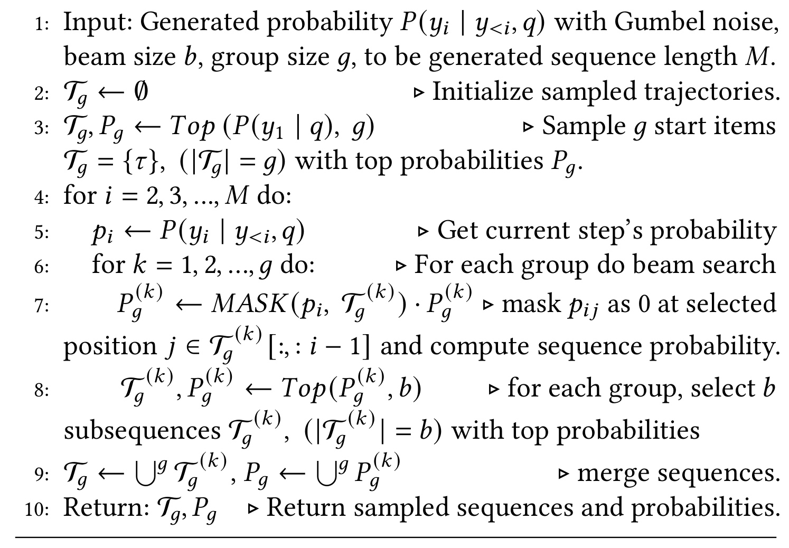
Algorithm 1 先取概率最高的 $g$ 个不同起点，每个起点独立维护大小为 $b$ 的 beam；每一步先 mask 已选 item，避免序列内重复，再在组内保留 top-$b$ 子序列，最后合并全部组。实验用 $g=3,b=2$。与普通 beam 只围绕一个高概率前缀扩展相比，分组确保至少存在不同首 item，Gumbel 噪声进一步扰动局部顺序。图中第 7-9 步尤其重要：概率不是每步单独排序，而是乘回组内累计序列概率，因而仍偏好整体高概率轨迹；mask 只保证同一序列不重复 item，并不保证不同组之间不相似。它仍然偏向模型当前相信的区域，若初始模型概率已高度偏置，探索覆盖不会自动变成全排列均匀采样，分组数量也只能提供有限的起点覆盖。
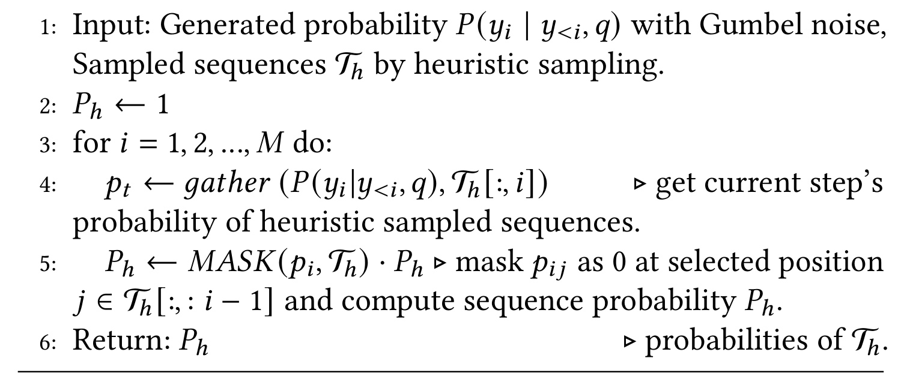
Algorithm 2 的序列并非由生成器搜索，而是动态加权上游 CTR、CVR 等业务分数并加入随机扰动得到，再用生成器逐位置回算 $P_h$。实际曝光序列也加入该集合。这样轨迹池同时包含 policy-near 的 group beam 序列、业务启发式序列和真实日志序列，降低单一搜索机制同质化。回算时同样 mask 已选位置。启发式分支的优势是引入生成器当前低概率但业务上合理的排列；风险是上游分数本身带有既有策略偏差，不能把“来源不同”直接等同于“反事实覆盖充分”。
对任意序列 $\tau=[g_1,\ldots,g_M]$，其联合概率为：
符号解释：每一项是给定已生成前缀和请求后选择当前位置 item 的概率。奖励模型给所有轨迹打分，按奖励降序排序，再取 $S$ 个分位点形成从 chosen 到 rejected 的 preference list，而不只保留一对。AR-ORPO 为每个较优分位赋 reward soft weight，并和所有更差分位的累计 odds 比较：
符号解释：$\operatorname{odds}(\tau\mid q)=P(\tau\mid q)/(1-P(\tau\mid q))$，$t$ 是温度；$t$ 小时高奖励序列权重更集中。它把 reward 的幅度信息用于优化强度，又以分位列表降低单个偏好对的偶然性。附录在独立同分布 logit 噪声假设下给出梯度方差约按 $1/(S-1)$ 缩放的近似，但真实轨迹高度相关，不能把这一近似当作无条件稳定性保证。
最终 generator 目标为：
符号解释：论文设置 $\beta=2.0,\gamma=0.01$；三个项分别承担历史分布锚定、并行头去冗余与奖励偏好迁移。线上不再计算 $R_\theta$，直接 greedy 生成一个序列，因此训练期奖励质量必须能够外推到 generator 自己改变后的策略分布。
3. 实验结果
3.1 数据、基线、指标与实现口径
公开 Taobao 数据包含 8 天约 2600 万条曝光日志，前 7 天训练、后 1 天测试，并按用户-时间戳把最多 10 个 item 组成请求。京东生产数据来自首页推荐，约 1 亿用户、10 亿请求，按 8:1 划分训练与测试。每个任务从 $N=30$ 候选生成 $M=10$ 曝光项。离线指标为用户加权 GAUC、位置敏感 NDCG、MAP@K 和 Recall@K；Taobao 因部分请求交互少，$K=2$，京东同时报告 2 和 4。作者明确提醒历史日志有曝光偏差，未曝光新 item 没有真实反馈，离线指标不能保证线上一致。
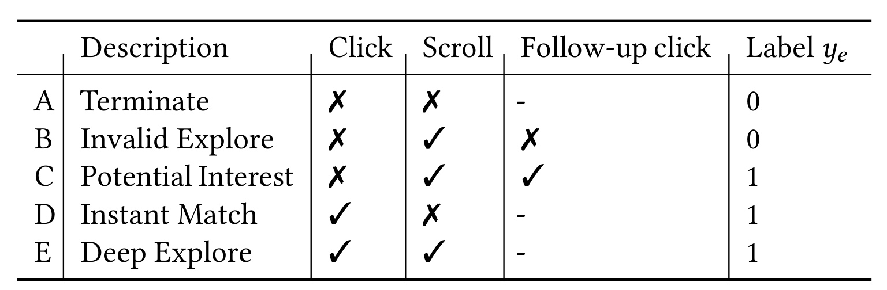
Table 1 明确了 reward 训练数据如何从行为日志生成。A 的停止浏览与 B 的无效探索都为 0，C 的后续点击、D 的即时匹配、E 的深度探索都为 1；B 在 Max-pCTR 不高于 0.01 时被 mask，C 的正权重还随 Max-pCTR 降低而放大。因而同一个“当前未点击但继续滚动”样本会因供给质量和下一请求结果得到不同监督。表中只给二值标签，未展示五类样本数、类别权重 $w_A$ 到 $w_E$ 的具体值、session 超时窗口或跨设备归因规则，这些都是复现 reward calibration 时最敏感的缺口。滚动也未必表示满意，PV 提升必须和跳失、停留、负反馈共同验收。
基线覆盖三类：one-stage 的 DCN、PRM；two-stage 的 PIER、GRN、CMR、NAR4Rec、MG-E；generator-only 的 GReF。reward model 的评价另有口径：先用排序分数启发式采样 16 条序列，再由 reward model 选最好序列，和 generator 用同样指标比较。这个协议让二者落到统一输出，但 16 条启发式序列覆盖窄，reward model 的绝对结果天然受 candidate set 限制，也解释了后续“reward model 提升小、generator 提升大”的差异。
实现上 reward model 的点击/购买 MMoE 含两个 128-unit expert，探索奖励占比 $\alpha=0.2$；decoder 设 6 个 FFN head；多机制采样使用 3 个 group、beam size 2 和 7 条 heuristic sequence；AR-ORPO 设 $S=3,t=0.2$。这些参数让结果可定位，但没有多随机种子方差、超参数搜索预算或不同列表长度的系统报告。
3.2 Taobao 与 JD 离线主结果
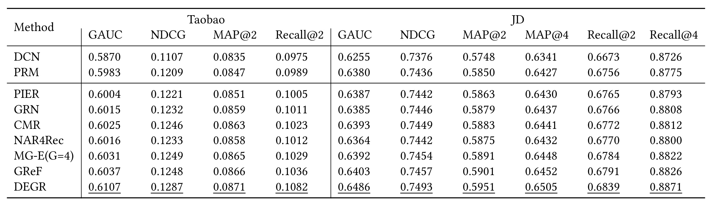
Table 2 显示 DEGR 在所有报告指标上为最佳。Taobao 上 DEGR 的 GAUC/NDCG/MAP@2/Recall@2 分别为 0.6107/0.1287/0.0871/0.1082；最强 generator-only 基线 GReF 为 0.6037/0.1248/0.0866/0.1036，绝对差为 0.0070/0.0039/0.0005/0.0046。京东上 DEGR 为 GAUC 0.6486、NDCG 0.7493、MAP@2/4 0.5951/0.6505、Recall@2/4 0.6839/0.8871；GReF 对应 0.6403/0.7457/0.5901/0.6452/0.6791/0.8826。提升在京东 MAP 与 Recall 上更稳定，符合探索标签来自京东生产场景的设计，但也意味着 Taobao 只能验证通用排序效果，不能直接验证 future-action reward。
表中 MG-E 通过多生成器扩大序列差异，GReF 用 ordered multi-token prediction 与 DPO 提升生成效率，NAR4Rec 用非自回归 matching 加速。DEGR 的优势可能同时来自 transformer encoder-decoder、parallel heads、更多采样轨迹和新奖励，不能仅凭主表把增益全部归到“跨请求探索”。消融提供了进一步证据，但公开数据没有跨请求标签、私有数据没有置信区间，外部可复现性仍不对称。
3.3 分位数分析与线上 A/B
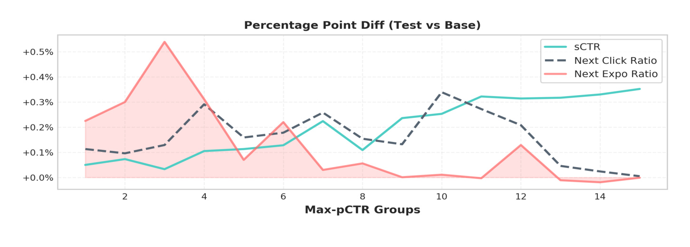
Figure 5 画的是 Test 相对 Base PRM 的百分点差，而 Figure 4 是 Base 绝对值。低 Max-pCTR 组中，NER 的相对提升最高，随后在较高分位下降，符合“供给差时先维持浏览”的策略；NCR 在若干中高分位也有明显提升，说明供给变好后 DEGR 不只追求继续曝光。sCTR 多数分位为正，但并非单调。作者据此主张系统在即时与探索之间自适应切换。更谨慎的读法是：曲线方向与奖励设计一致，却没有用户随机化后的分位置信区间，也没有展示低分位即时业务指标是否存在局部损失；因此它是机制一致性证据，不是完整因果分解。
线上在京东首页运行 7 天，DEGR 面向主用户流量报告 UCTR +1.22%、PV +0.20%。论文将 UCTR 定义为 click PV/exposure UV，将 PV 视为更深浏览与更多曝光。w/o EDC 版本为 UCTR +0.72%、PV +0.20%，表明 EDC 对点击有额外帮助，而探索深度相近。线上收益是本文最有工程说服力的证据，但缺少样本量、实验桶比例、显著性、用户留存、投诉/跳失、成交额和低质量内容曝光等护栏；“PV 上升”也可能意味着找到更多内容，或只是需要更久才能找到目标，必须结合体验指标解释。
3.4 消融、偏好概率与分位数
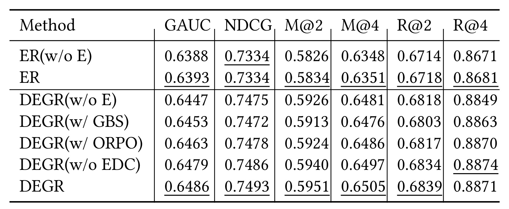
Table 3 先比较 reward model：ER(w/o E) 到 ER 的 GAUC 从 0.6388 到 0.6393，MAP@2 从 0.5826 到 0.5834，提升较小；作者认为受限于 16 条启发式候选的覆盖。generator 中，DEGR(w/o E) 为 MAP@2 0.5926、Recall@2 0.6818，完整 DEGR 为 0.5951/0.6839，即 +0.25pp/+0.21pp。只用 GBS 的版本为 0.5913/0.6803，低于多机制采样。普通 ORPO 对照为 0.5924/0.6817，AR-ORPO 对照为 0.5940/0.6834，论文报告 +0.16pp/+0.17pp。完整模型相对 w/o EDC 的 MAP@2 再增 0.11pp，但 Recall@4 从 0.8874 略降到 0.8871，说明 EDC 并非所有指标一致正增益。消融行命名并非完整 factorial design，阅读时应按作者正文指定的成对比较，不宜跨多行随意做归因。
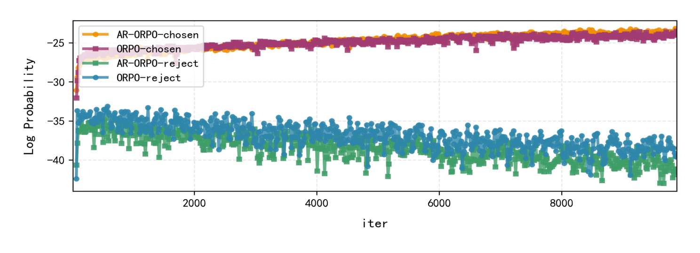
Figure 6 展示约 9000 次迭代内四条轨迹。两种方法都把 chosen 保持在约 -25 附近，把 rejected 压到约 -35 至 -40；AR-ORPO chosen 曲线整体略高、reject 曲线略低，组间间隔更清楚。横轴是训练迭代，纵轴是整条序列的 log probability，因此十个位置概率相乘后数值为较大负数是正常现象；应比较组间距离和趋势，而不是把 -25 解释为单个 item 概率。它支持 reward soft weight 与多分位比较能强化偏好分离，但图中没有方差带、独立重复或最终 reward/线上指标的对应关系。概率间隔变大也不天然等于排序更好：若 reward model 偏置，优化器只会更坚决地拟合偏置。
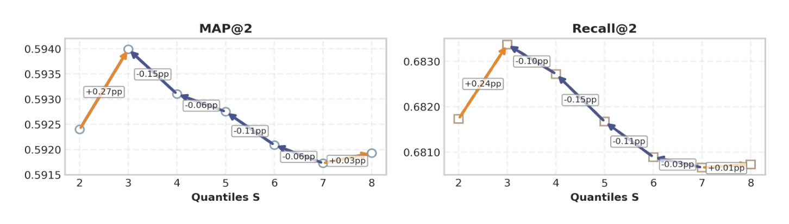
Figure 7 的 MAP@2 和 Recall@2 都在 $S=3$ 达峰，继续增加到 4-8 后逐步下降；两块面板的形状一致，说明不是某一个指标单独驱动选择。较大的 $S$ 提供更多相对排序信息，理论近似也暗示梯度方向更稳定；但中间分位之间 reward 差距小，容易混入 evaluator noise，简单负样本还会稀释真正困难负样本的权重。图上标注的是相对前一设置的 pp 变化，峰值之后多数为负，且 MAP 与 Recall 的最优位置一致。因而论文最终取 $S=3$，不是“列表越长越好”。图只在固定 $t=0.2$ 下扫描 $S$，尚不能判断 $S$ 与 temperature 是否存在强耦合；复现应做二维网格和多随机种子，而非直接搬用单点配置。
3.5 复杂度、并行解码与线上服务
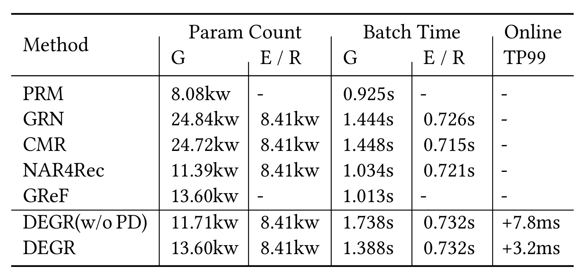
Table 4 以论文原单位 kw 报告参数量。DEGR generator 为 13.60kw，reward model 为 8.41kw，batch time 分别为 1.388s 和 0.732s；线上仅部署 generator，TP99 相对基线增加 3.2ms。DEGR(w/o PD) generator 只有 11.71kw，却需 1.738s，线上 TP99 增加 7.8ms。parallel decoding 多付出 FFN head 参数，把训练 batch time 降约 20.1%，并将线上增量减少 4.6ms。相对 GRN/CMR，DEGR generator 参数更多，但省掉在线 evaluator。论文称 3.2ms 可接受，并提出 operator merging 仍可优化。
这张表支持“离线重探索、在线轻服务”的设计，但仍缺少 GPU 型号、batch size、候选长度扩展曲线、吞吐、显存和端到端链路占比。理论 $O(M/K)$ 也不是实际线性 $K$ 倍加速，因为 attention、candidate matching 和 kernel launch 不随 head 数等比例下降。工业复现应至少按 $N,M,K$ 三轴测 TP50/TP95/TP99，并把 reward model 周期训练、离线轨迹采样和存储成本纳入总成本，而不只看在线 3.2ms。
4. 总结
4.1 我的判断与工程启发
DEGR 最值得保留的不是“生成式重排又赢一张表”，而是把重排目标从当前请求的 slate value 延伸为跨请求的浏览期权。它用 Max-pCTR 识别供给是否受限，用 current click、scroll、next click 构造探索标签，再将 reward-guided preference learning 蒸馏进一次 greedy generator；同时用监督项和 EDC 约束偏好优化不要破坏基本能力。这个组合比直接在线 bandit 更容易部署，也比 GE 在线多序列评估更省延迟。
对推荐工程，第一条启发是把 next-request 行为建成显式 label，而不是只把长周期收益塞进一个不可解释的总 reward。第二条是探索强度必须由供给质量和安全门槛共同调节：低 Max-pCTR 只能说明当前候选弱，不能保证任意低分 item 都值得曝光。第三条是离线多机制采样、线上单路径生成是一种可迁移范式，可用于广告混排、搜索结果多样化和内容 feed，但 reward 评估必须持续覆盖新策略分布。对大模型后训练，AR-ORPO 展示了从 pairwise preference 走向 reward-weighted ordered list 的方式；同样思路可用于 RAG 文档排列、Agent 工具序列和个性化候选生成。
4.2 局限、复现检查与后续跟进
至少有四个边界需要保留。其一，跨请求标签和 10 亿请求 JD 数据不可公开，Taobao 又缺少同构 future-action 标签，外部只能复现排序结构，难以复现核心探索收益。其二，Max-pCTR 是代理变量，可能混入用户活跃度、入口和模型校准误差；0.01 的 B 类 mask 阈值及 $w_C$ 公式需要跨场景重标定。其三，reward model 从历史曝光学习，再评价 generator 产生的新序列，存在策略外分布与反馈闭环；论文未报告 uncertainty、off-policy correction 或保守约束。其四，7 天线上实验缺少显著性、长期留存、成交与体验护栏，PV 增加不能单独解释为用户收益。其五，EDC 只约束表示相似度，可能把业务上合理的互补相似商品推开，Recall@4 的轻微回落已经提示多目标折中。
复现时应先固定 $N=30,M=10$，独立重建 item-wise reward、A-E 标签与 session 切分，检查 B/C 类占比和 label delay；随后对 reward model 做 calibration、分位 AUC 与 policy-shift stress test，再比较 SL、SL+EDC、pairwise ORPO、AR-ORPO 和完整多机制采样。效率侧需要同时记录采样离线成本、generator TP99 与显存。后续最值得跟进三项：第一，代码或更完整伪代码是否公开，尤其是 quantile selection 与 loss 正负号；第二，加入成交、停留、负反馈和长期留存后的多目标 reward 是否仍保持 UCTR/PV 双增；第三，在不同供给质量、用户活跃度和冷启动群体中做安全分层，验证探索没有把低质曝光成本集中到脆弱用户。